Selected research highlights on long-term reversibility of the Earth system under mitigation and overshoot scenarios, tipping point interactions, and land–climate feedbacks.
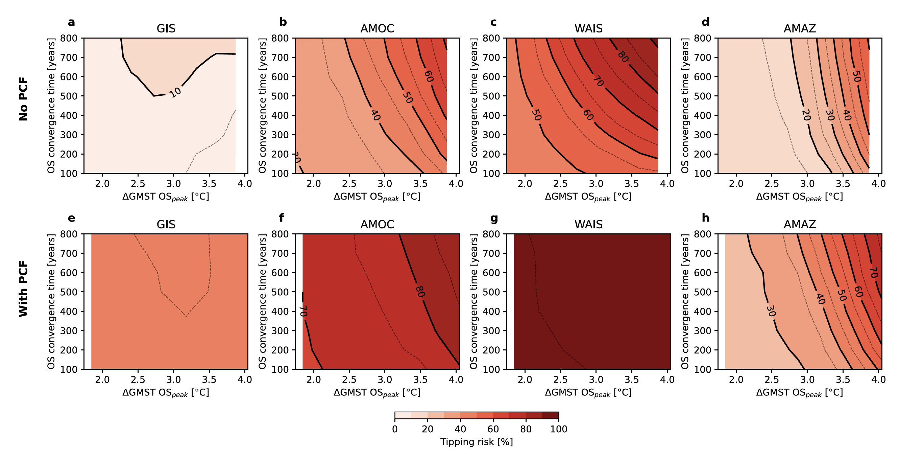
Many current-generation climate models omit the permafrost carbon–climate feedback (PCF), limiting projections of long-term temperature outcomes and associated tipping risks. Integrating permafrost carbon emissions into a chain of simple climate and tipping network models, including the Greenland and West Antarctic ice sheets, AMOC, and the Amazon, we find that PCF increases the probability of exceeding one or more tipping elements by up to 50% and can accelerate the timing of tipping events by hundreds to thousands of years. The effect is most pronounced in low-to-mid overshoot scenarios with peak temperatures below 2–3°C, where PCF-induced warming pushes systems across thresholds they would otherwise narrowly avoid, narrowing the critical temperature space for safe overshoot pathways.
Steinert, N. J., G. Munday, M. Sandstad, B. M. Sanderson, N. Wunderling: Permafrost carbon–climate feedback amplifies Earth system tipping risks. Environmental Research Letters, 21, 124008 (2026).
doi:10.1088/1748-9326/ae7586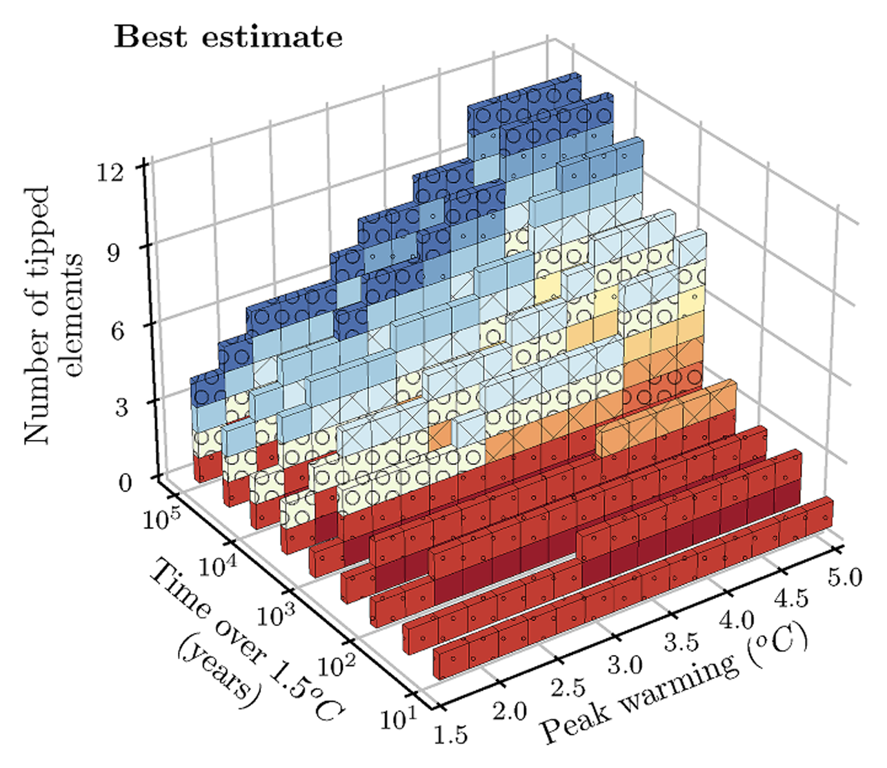
Global warming is increasingly likely to exceed 1.5°C, temporarily surpassing tipping thresholds for several Earth system components. This review shows that minimising both the magnitude and duration of any overshoot is vital for reducing tipping risks. Fast-responding systems such as tropical coral reefs are especially vulnerable even to brief overshoots, while slow response system, such as ice sheets, may still be avoidable if warming is reversed quickly.
Ritchie*, P. D. L., N. J. Steinert*, J. F. Abrams, …, N. Wunderling*: The implications of overshooting 1.5°C on Earth system tipping elements — a review. Environmental Research Letters, 21, 043001 (2026).
doi:10.1088/1748-9326/ae3cad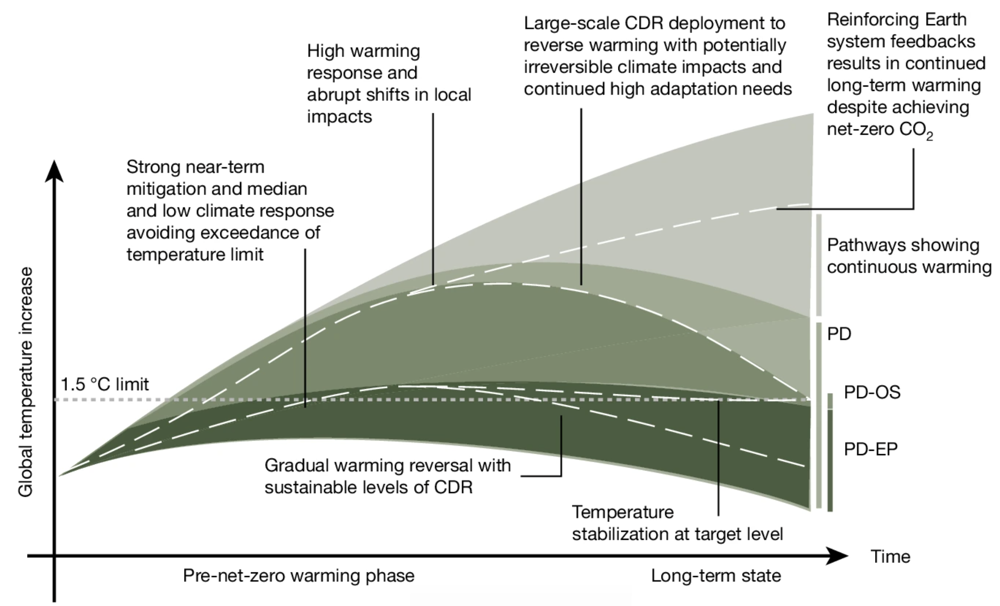
Climate change risks after a temperature overshoot differ substantially from a world that avoids it. Achieving declining global temperatures can limit long-term risks, including for sea-level rise and cryosphere changes, compared with mere stabilization. However, strong Earth-system feedbacks could undercut temperature reversal, and the study identifies a geophysical need for preventive carbon dioxide removal capacity of several hundred gigatonnes.
Schleussner, C.-F., G. Ganti, Q. Lejeune, …, N. J. Steinert, …, J. Rogelj: Overconfidence in climate overshoot. Nature, 634, 366–373 (2024).
doi:10.1038/s41586-024-08020-9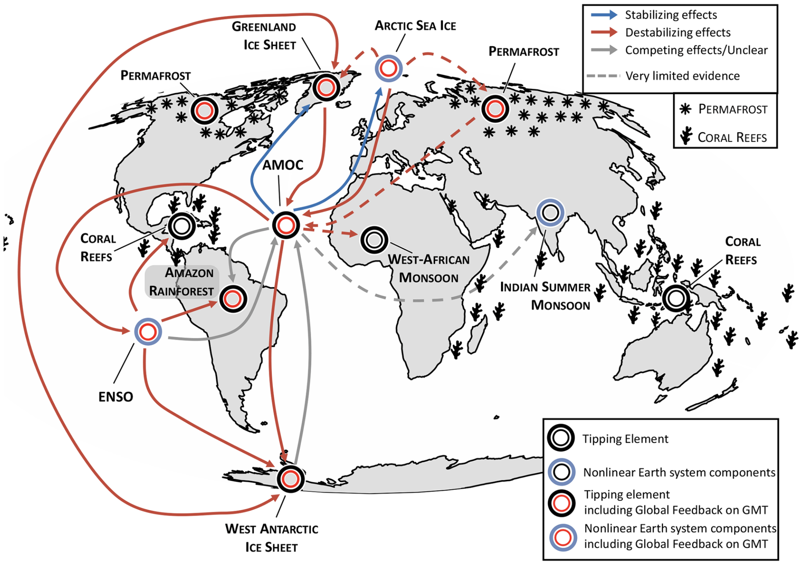
Climate tipping elements may cross critical thresholds under continued warming. This review maps the interactions between tipping elements using evidence from model simulations, observations, conceptual reasoning, and paleoclimate reconstructions, identifying where climate tipping cascades are most plausible and where key knowledge gaps remain.
Wunderling*, N., A. S. von der Heydt*, …, N. J. Steinert, …, M. Willeit: Climate tipping point interactions and cascades: a review. Earth System Dynamics, 15(1), 41–74 (2024).
doi:10.5194/esd-15-41-2024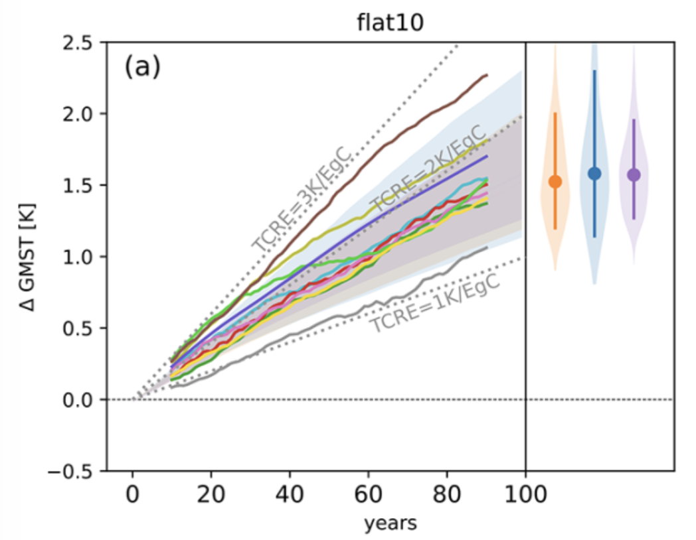
A new emissions-driven model intercomparison protocol establishes consistent diagnostics for the Transient Climate Response to Cumulative Emissions (TCRE), the Zero Emissions Commitment (ZEC), and climate reversibility. Using constant emissions near present-day values, the framework simplifies comparison across Earth system models and shows that ZEC estimates are on average 30% smaller under this protocol than under conventional 1pctCO₂ experiments.
Sanderson, B. M., V. Brovkin, …, N. J. Steinert, …, T. Ziehn: flat10MIP: an emissions-driven experiment to diagnose the climate response to positive, zero, and negative CO₂ emissions. Geoscientific Model Development, 18(17), 5699–5724 (2025).
doi:10.5194/gmd-18-5699-2025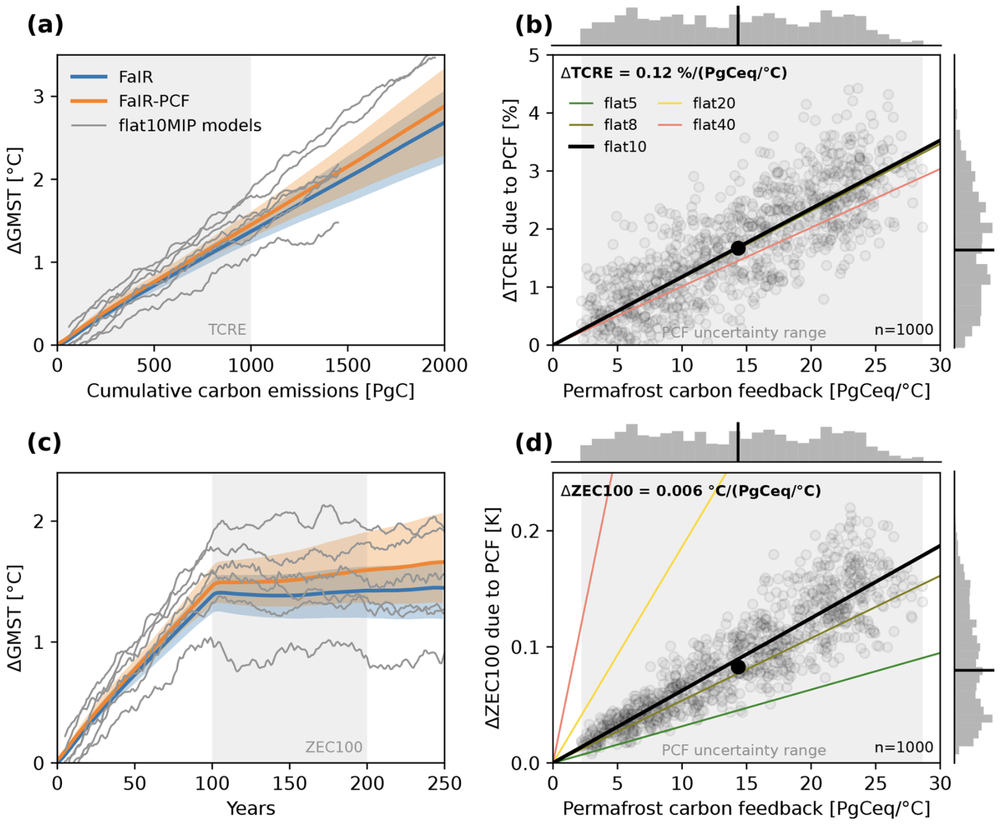
As permafrost thaws, the permafrost carbon-climate feedback (PCF) amplifies TCRE and ZEC by adding greenhouse gases to the atmosphere. Using a permafrost carbon response model coupled to the simple climate model FaIR, this study quantifies the PCF's contribution to these key climate metrics and shows it can substantially increase their estimates. Relating the metrics to permafrost carbon emissions enables normalization of the PCF contribution, making its uncertainties more tractable.
Steinert, N. J. & B. M. Sanderson: Normalizing the permafrost carbon feedback contribution to TCRE and the Zero Emissions Commitment. Earth System Dynamics, 16(5), 1711–1721 (2025).
doi:10.5194/esd-16-1711-2025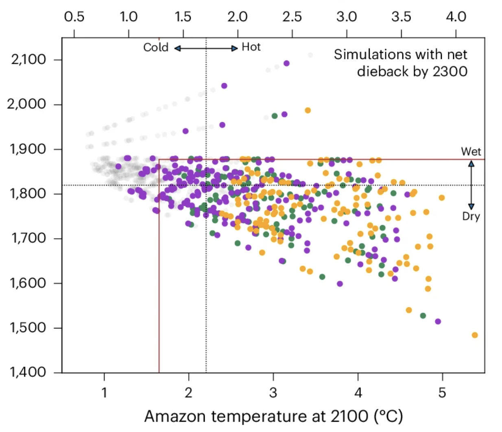
Even at 1.5°C, forest ecosystems face risks of irreversible impacts including Amazon forest loss and high-latitude woody encroachment. This study quantifies these risks across three scenarios exploring low levels of temperature exceedance, showing that some forest impacts are unavoidable regardless of whether warming is stabilized or overshoots the target, and that the duration of any overshoot critically determines the extent of irreversible change.
Munday, G., C. D. Jones, N. J. Steinert, C. Mathison, E. Burke, C. Smith, C. Huntingford, R. Varney: Risks of unavoidable impacts on forests at 1.5°C with and without overshoot. Nature Climate Change, 15, 650–655 (2025).
doi:10.1038/s41558-025-02327-9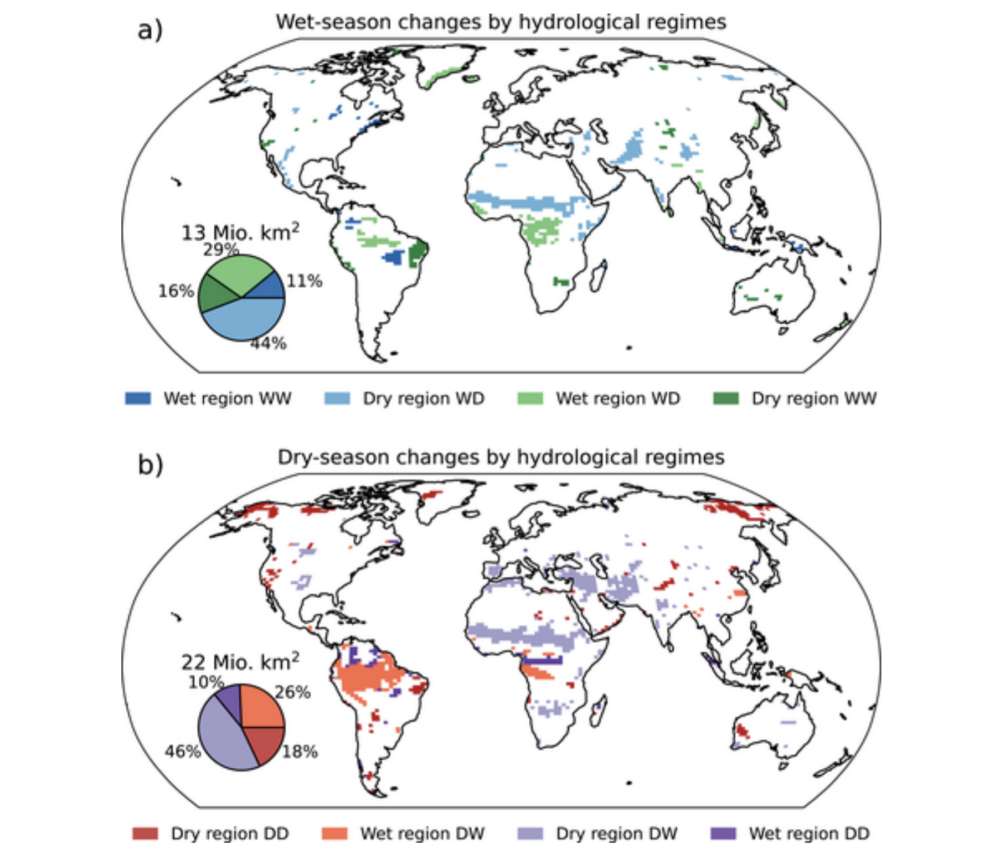
Models exhibiting an irreversible shift of the Intertropical Convergence Zone (ITCZ) during a temperature overshoot show irreversible regional and seasonal water availability in tropical regions. Half a century of CO₂ stabilization after overshoot only halves these legacy effects for over 23% of the world population, making this a low-probability but high-impact outcome for human societies.
Steinert, N. J., J. Schwinger, R. Chadwick, J.-S. Kug, H. Lee: Irreversible Land Water Availability Changes From a Potential ITCZ Shift During Temperature Overshoot. Earth's Future, 13(5), e2024EF005787 (2025).
doi:10.1029/2024EF005787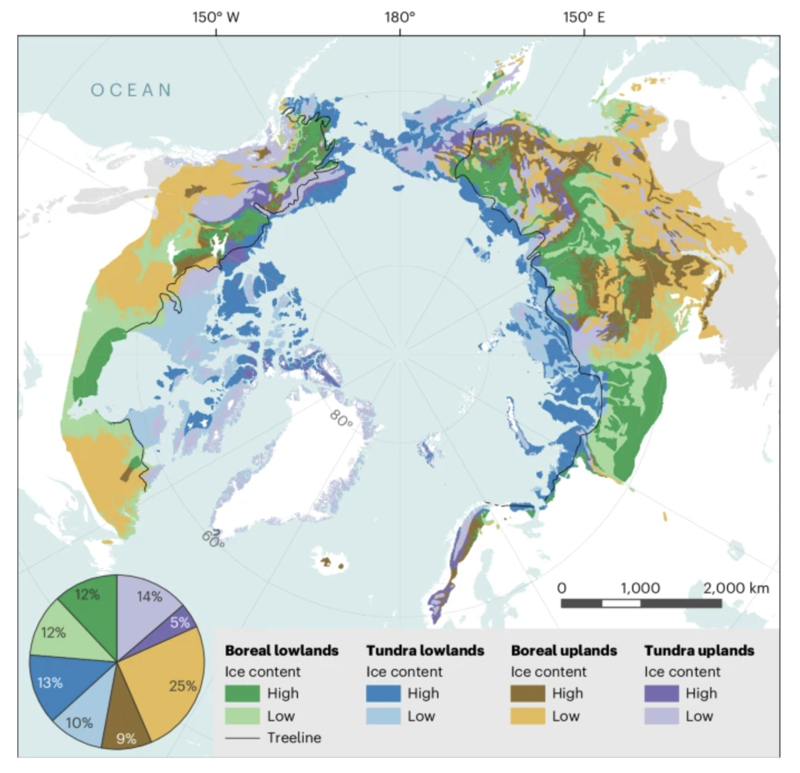
Despite feedbacks driving rapid and irreversible thaw at local to regional scales, the aggregated Arctic permafrost response to warming remains quasilinear, without a clear global peramfrost tipping point. This perspective argues that the absence of a global threshold provides no safety margin: every increment of warming exposes more land to thaw, producing continuous detrimental local impacts and incremental amplification of global carbon feedbacks.
Nitzbon, J., T. Schneider von Deimling, M. Aliyeva, …, N. J. Steinert, …, M. Langer: No respite from permafrost-thaw impacts in the absence of a global tipping point. Nature Climate Change, 14, 573–585 (2024).
doi:10.1038/s41558-024-02011-4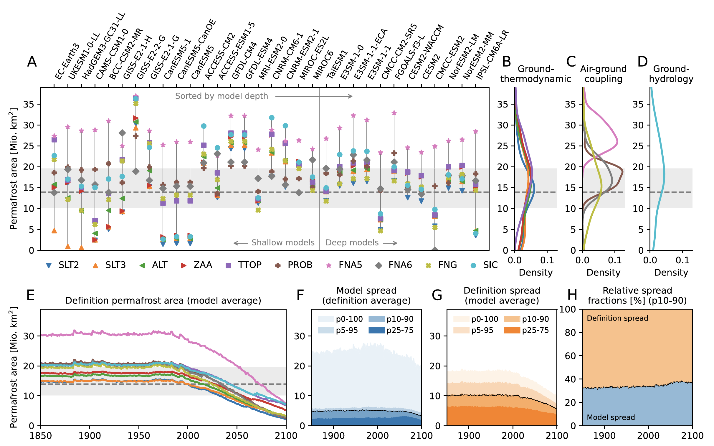
Permafrost area estimates from CMIP6 Earth system models of 15-21 million km² vary by up to 18 million km² depending solely on how permafrost presence is defined. This definition spread propagates into simulated permafrost-area soil carbon changes of up to 28%, highlighting a fundamental but largely overlooked source of uncertainty in projections of the permafrost carbon feedback.
Steinert, N. J., M. V. Debolskiy, E. J. Burke, F. García-Pereira, H. Lee: Evaluating permafrost definitions for global permafrost area estimates in CMIP6 climate models. Environmental Research Letters, 19(1), 014033 (2024).
doi:10.1088/1748-9326/ad10d7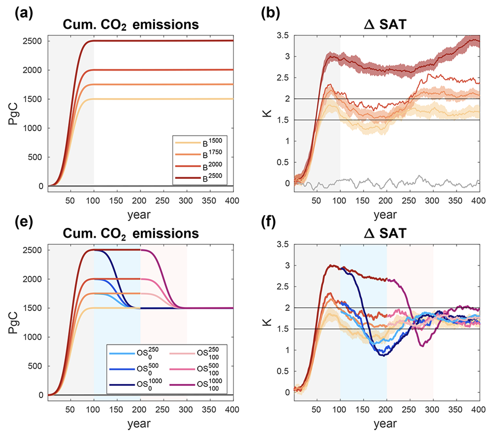
After temperature overshoot, most large-scale climate indicators such as surface temperature, marine and terrestrial productivity, AMOC strength, are reversible on centennialial timescales. However, irreversibility is found for permafrost carbon and deep ocean properties. No evidence of tipping points or self-reinforcing feedbacks could be found across the overshoot scenarios examined using the NorESM2-LM Earth System Model.
Schwinger, J., A. Asaadi, N. J. Steinert, H. Lee: Emit now, mitigate later? Earth system reversibility under overshoots of different magnitude and durations. Earth System Dynamics, 13, 1641–1665 (2022).
doi:10.5194/esd-13-1641-2022